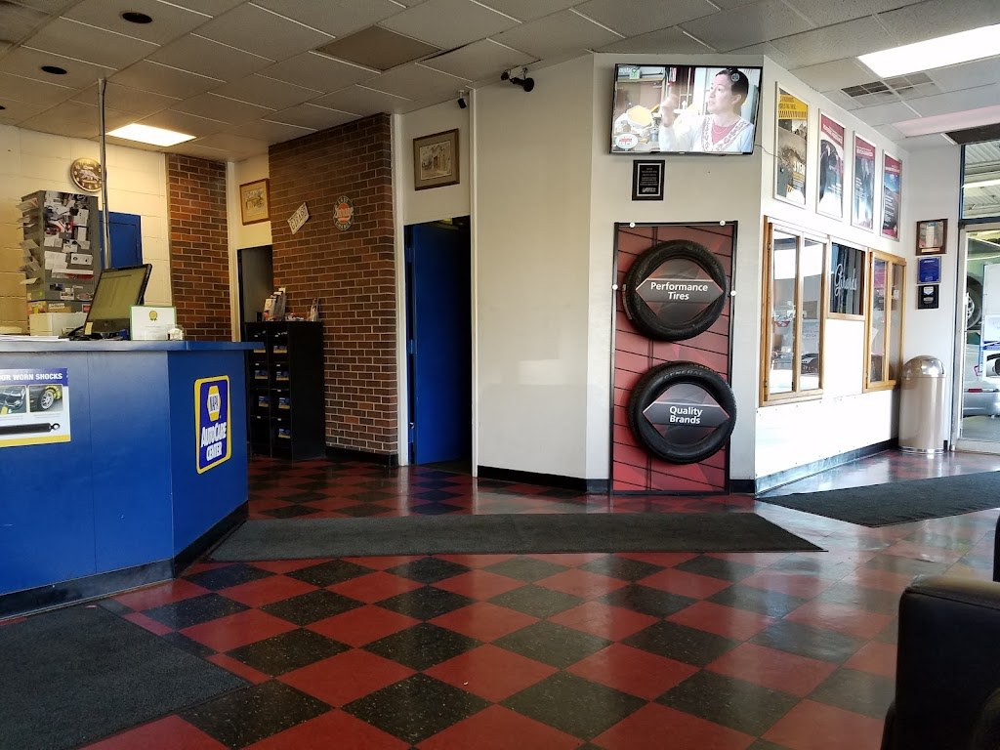
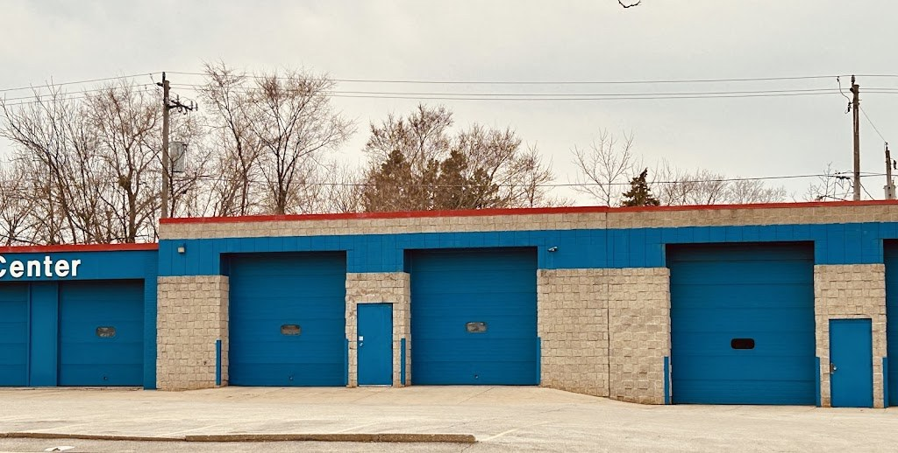

Visit Girard's Service Center
AAA Approved Auto Repair and a NAPA facility, fixing cars in South Milwaukee since 1967.
Address: 3018 S Chicago Ave, South Milwaukee, WI 53172
Hours: Monday through Friday, 7:30 AM to 5:30 PM.
Phone: (414) 764-2030
Gallery


All three photos are real photos from the business's Google Maps listing: the blue-block Girard's building with the Oil Change No Waiting sign and a red awning; the waiting room with a blue counter, brick wall, tire display, and checkered floor; and service bays with blue garage doors on the stone-block building.
Contact
Girard's Service Center serves South Milwaukee, WI. Questions? Call (414) 764-2030.